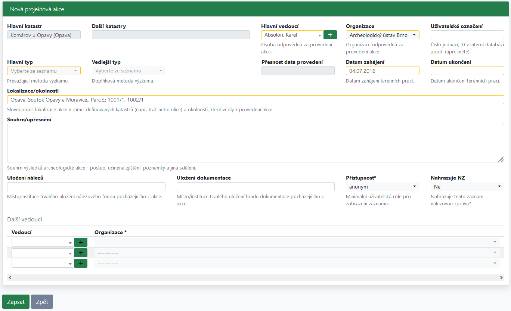
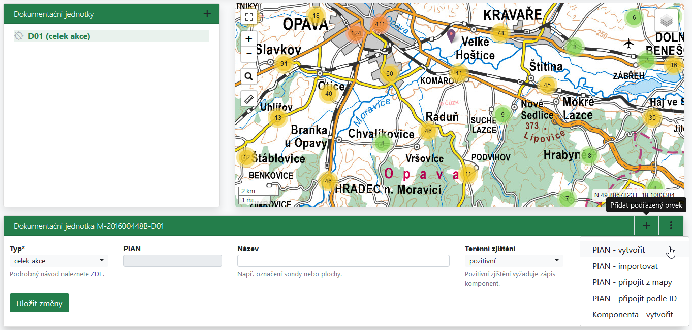
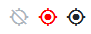
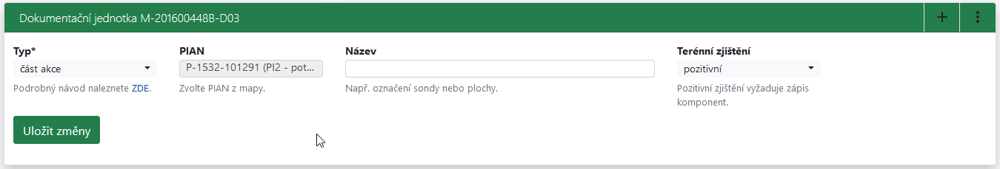
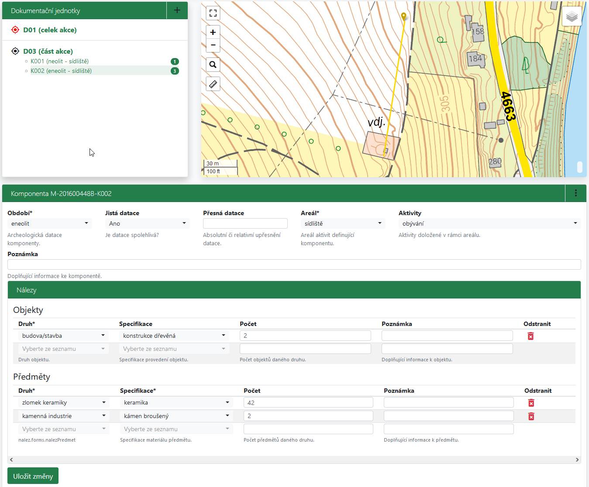
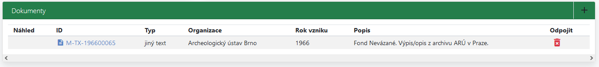
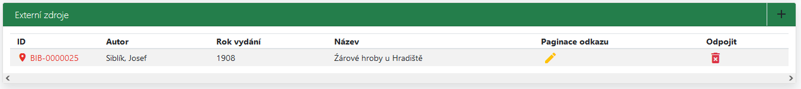
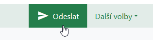
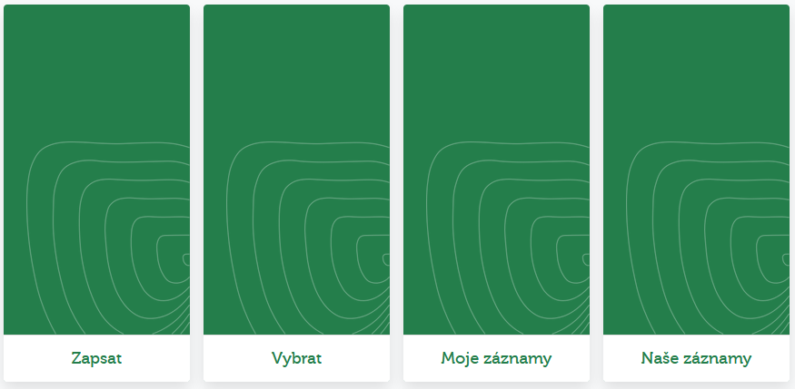

Správa akcí
Archeologické akce v rámci AMČR dělíme na projektové a samostatné. Správa projektových akcí probíhá v rámci projektů, ke kterým jsou tyto akce připojeny. Správa samostatných akcí pak v modulu Samostatné akce. Obsah a rozložení formulářů jsou u obou typů akcí téměř totožné a liší se pouze v několika specifických ohledech (u samostatné akce chybí odkaz na nadřazený projekt, je třeba samostatně vybrat katastr v poli Hlavní katastr, protože se sem nemůže propsat z lokalizace projektu apod.)
- Jako
Akceoznačujeme archeologické akce, které jsou součástíProjektu, který je jejich nadřazenou evidenční jednotkou sloužící k administraci procesu archeologického výzkumu. Samostatné akcejsou akce, u kterých evidence administrativních informací (kontakt na investora apod.) zaznamenaných prostřednictvímProjektunedává smysl. Jde tedy primárně o způsob retrospektivního zápisu akcí.- Jako
Samostatné akcedoporučujeme zapisovat akce starší 5 let, to je doba, po které jsme stejně nuceni část administrativních údajů (osobní údaje apod.) ze systému odstranit.
Videonávod
Videonávod ukazuje celý proces, který se týká správy projektů a akcí od zápisu projektu po jeho uzavření. Video nemá zvuk.
Pro modul Archeologické akce jsou relevantní především následující části videa:
Návod
Vytvoření akce
Akce vytváříme především jako součásti jednotlivých projektů v sekci Archeologické akce detailu daného projektu. Projektové akce je možné vkládat ke konkrétnímu projektu nejprve ve stavu zahájen v terénu. Od té doby je možné k projektu připojit/zapsat akci a do akce zapisovat informace a připojovat k ní dokumenty. Dokud probíhá editace záznamu, je tato akce ve stavu zapsaná až do okamžiku, kdy je odeslána ke kontrole a archivaci.

Detail akce zobrazuje v záhlaví její identifikátor spolu s odkazem k návratu na nadřazený projekt, jde-li o projektovou akci, sekci Detail záznamu, sekci Dokumentační jednotky, mapové okno, sekci Dokumenty a sekci Externí zdroje.
Dokumentační jednotky
V sekci Dokumentační jednotky lze podle charakteru akce připojovat tomu odpovídající dokumentační jednotky (DJ). Přidáváme je v sekci Dokumentační jednotky pomocí ikony + (Přidat dokumentační jednotku). Po kliknutí na ikonu + se níže otevře sekce Nová dokumentační jednotka, kde lze přidat novou DJ. Po uložení přibyde DJ do seznamu dokumentačních jednotek a v liště dané sekce se otevře možnost přidávat podřazené prvky, především PIANy a komponenty. Jak správně zapisovat DJ popisuje následující tutoriál.
Dokumentační jednotky dělíme na dvě základní skupiny. První z nich je tvořena DJ typu Celek akce. Pokud je u takové akce třeba vyčlenit i další dokumentační jednotky, jsou tyto vždy typu Část akce. Druhou skupinou tvoří DJ typu Sonda, kdy jsou všechny DJ akce stejného typu. Označení sonda je v tomto případě třeba brát jako arbitrární, které se vymezuje oproti použití DJ typů celek/část akce a kombinace obou skupin v rámci jedné akce tedy není možná. Užití určitého typu DJ vyjadřuje její hierarchický vztah k dalším DJ v rámci jedné akce, kdy části akce jsou podřazeny celku akce, kdežto sondy, bez ohledu na jejich počet nebo prostorovou velikost, jsou souřadné.

V seznamu dokumentačních jednotek lze pomocí ikony terčíku vlevo od dokumentační jednotky určit, zda je k ní připojený PIAN a zda jde o potvrzený či nepotvrzený PIAN. Šedý přeškrtnutý terčík symbolizuje, že dokumentační jednotka nemá připojený PIAN, červený, že PIAN není potvrzený a černý, že je PIAN potvrzený.

Zvláštní součástí dokumentační jednotky může být tzv. archeologický dokumentační bod (ADB), který je součástí DJ v rámci Pražské památkové rezervace. Pro zápis ADB je třeba použít DJ typu Sonda. Popis ADB se řídí metodikou dostupnou na portálu Praha archeologická, případně tutoriálem pro zápis ADB v AMČR. Ke každému ADB jsou připojeny popisné údaje, které jej blíže specifikují. Popis zahrnuje adresní údaje, identifikaci parcelním číslem a interní identifikátor organizace, která výzkum prováděla. Dále je udán autor a rok odborného popisu, druh zásahu a jeho podnět. Součást popisu ADB představují též výškové informace v podobě výškových bodů (VB, v systému Balt po vyrovnání – Bpv), konkrétně niveleta podloží, základních stratigraficko-chronologických celků a současného povrchu.
PIAN
Ke každé dokumentační jednotce lze připojit právě jeden PIAN. PIAN lze k dokumentační jednotce přidat několika způsoby:
- vytvořit nový nakreslením v mapě (návod k mapovému prostředí);
- importem geometrie z CSV (návod k vytvoření importního souboru CSV);
- připojit existující PIAN z mapy;
- připojit existující PIAN pomocí identifikátoru.
Při vytváření nového PIAN v mapovém okně vytváříme jeho geometrii podle charakteru dokumentační jednotky, ke které PIAN připojujeme. Volíme mezi bodovou, liniovou a polygonální geometrií PIAN. V případě liniových a polygonálních geometrií PIAN se jejich hrany nesmí křížit, tj. geometrie musí být validní (probíhá automatická kontrola). Pro vytvořený PIAN vybíráme v sekci Nový PIAN jeho přesnost z možností na jednotky, desítky či stovky metrů. PIAN je možné po jeho vytvoření zpětně editovat (přidávat, odstraňovat, přesouvat lomové body), a to až do jeho potvrzení při archivaci dané akce.
Při připojování existujícího PIANu z mapy se obdobně v dané sekci v poli PIAN zobrazí identifikátor vybraného PIANu. Při připojování existujícího PIANu podle ID se pak z pole PIAN stane rozbalovací nabídka, kde lze požadovaný PIAN podle identifikátoru vyhledat. Připojujeme-li již existující PIAN, musí tento svým typem, rozsahem a přesností odpovídá dokumentační jednotce, ke které ho chceme připojit.
Import PIANu z CSV souboru je detailně popsán v samostatném textu.

Komponenty a nálezy
K dokumentačním jednotkám, které jsou pozitivní, je třeba připojit jednu či více archeologických komponent. Pro každou z komponent definujeme její chronologické zařazení, typ areálu a druh aktivity. Komponeny přidáváme v sekci Nová komponenta, po uložení přidané komponenty se pak rozbalí nabídka pro přidání nálezů. Ke každé komponentě lze v sekci Přidat nálezy připojit základní typy objektů a předmětů (nemovitých a movitých artefaktů), které tuto komponentu charakterizují.

Dokumenty
Ke každé archeologické akci je možné připojovat dokumenty, které s ní souvisejí. Typicky se jedná o dokumenty typu nálezová zpráva či hlášení/ZAA, ale na výběr jsou i další typy dokumentů. Správa dokumentů je popsána v samostatném návodu.

Externí zdroje
K archeologické akci je v relevantních případech možné připojit také externí zdroj informací, např. publikovanou literaturu atp., viz návod ke správě externích zdrojů.

Odeslání akce
V okamžiku, kdy jsou všechny odborné informace a související dokumenty prostřednictvím aplikace AMČR podány, uživatel může akci odeslat ke kontrole. Pokud se jedná o jedinou akci u projektu, musí rovněž uzavřít i celý projekt. Alternativním postupem je nejprve uzavření projektu, které automaticky uzavře i všechny připojené projektové akce.

Správa samostatných akcí
Samostatné akce jsou akce, které nevyžadovaly terénní zásah, a tedy ani založení projektu. Tyto akce může do AMČR zapisovat každý registrovaný uživatel a jejich správa probíhá v modulu Samostatné akce. Mezi samostatné akce lze zapsat také zpětně akce, které proběhly před rokem 2007 (spuštění registru terénních zásahů), byť by svým charakterem patřily mezi projekty. Formulář pro zápis samostatné akce a pravidla zápisu jsou stejná, jako v případě akcí projektových, pouze tyto akce nejsou připojeny k žádnému projektu. Vzhledem k možnému zápisu starších akcí, u kterých nemusí již být všechny informace v dostatečné přesnosti, je však u samostatných akcí přípustné specifikovat datum jejich realizace ve volnější podobě (např. před rokem 1960) a stejně tak i vymezení PIAN je zde povoleno s přesností až na stovky metrů.
- Hlavní katastr je třeba zapsat manuálně, není děděn z projektu, kde byl vybrán bodem v mapě.
- Dokud akce není odeslána, je jí přiřazen dočasný identifikátor s předřazeným písmenem
X. - U projektových akcí je identifikátor akce odvozen od identifikátoru projektu, u samostatných akcí nikoliv.
